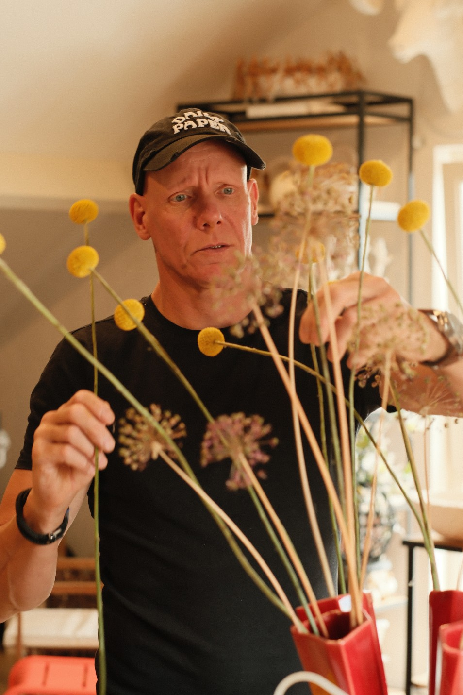

Mijn naam is Olaf Veenhuizen (1968), en ik ben de oprichter van Olaf – Flowers – Living – Objects. Al sinds mijn jeugd ben ik gefascineerd door de natuur. Opgegroeid in Maarssen, tussen de Vecht en het Amsterdam-Rijnkanaal, bracht ik veel tijd door in boomgaarden en op de Loosdrechtse Plassen. Die liefde voor het buitenleven heeft me uiteindelijk naar het groene vak geleid.
Na het afronden van de lagere tuinbouwschool ben ik verder gaan leren en heb ik onder andere mijn diploma als Vakbekwaam Bloemist, het certificaat Zelfstandig Ondernemerschap én de Meesterbinder-opleiding behaald. Inmiddels mag ik mezelf erkend bloemsierkunstenaar noemen – maar dat dekt nog maar een klein deel van wat ik doe.
Tijdens mijn carrière heb ik ervaring opgedaan bij talloze werkgevers en opdrachten uitgevoerd in binnen- en buitenland. Ik werkte in bloemenwinkels, als beursbloemist, ontwierp tuinen en verzorgde interieur- en kantoorbeplanting. Als zelfstandig ondernemer mocht ik bijdragen aan grote bloemcreaties voor koninklijke huwelijken, rouwceremonies en talloze evenementen wereldwijd.
Tijdens mijn opleiding tot Meesterbinder raakte ik gefascineerd door het maken van organische objecten. Die passie groeide uit tot de kern van mijn bedrijf: het vormgeven van unieke botanische kunst – bloemenarrangementen, sculpturen, objecten voor in huis of tuin, handgemaakt met aandacht voor vorm, materiaal en sfeer.